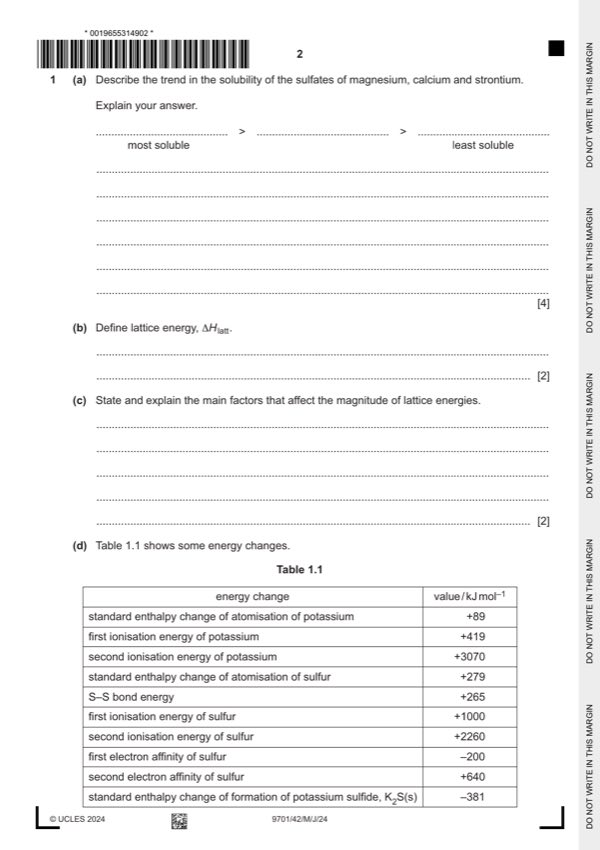

Question 1

Original paper page 2
Part 1(a) — solution
- [M1] magnesium > calcium > strontium 4
- [M2] Hlatt and Hhyd both become less exothermic / less negative
- [M3] Hlatt changes less OR Hhyd is dominant factor
- [M4] Hsol becomes less exothermic / less negative / more positive / more endothermic
Mark points
- [M1] magnesium > calcium > strontium 4
- [M2] Hlatt and Hhyd both become less exothermic / less negative
- [M3] Hlatt changes less OR Hhyd is dominant factor
- [M4] Hsol becomes less exothermic / less negative / more positive / more endothermic
Part 1(b) — solution
- [M1] H / energy change when 1 mole of an ionic solid / compound is formed 2
- [M2] from gaseous ions (under standard conditions)
Mark points
- [M1] H / energy change when 1 mole of an ionic solid / compound is formed 2
- [M2] from gaseous ions (under standard conditions)
Part 1(c) — solution
- [M1] as ionic radii increases AND Hlatt less exothermic 2
- [M2] as ionic charge increases AND Hlatt increases/more exothermic
Mark points
- [M1] as ionic radii increases AND Hlatt less exothermic 2
- [M2] as ionic charge increases AND Hlatt increases/more exothermic
Part 1(d)(i) — solution
Answer: 3
3
any two [1] any three [2] all four [3]
University Press & Assessment 2024 Page 5 of 15
9701/42 Cambridge International AS & A Level – Mark Scheme May/June 2024
Mark points
- Correct result: 3
Part 1(d)(ii) — solution
- [M1] selection of ONLY six correct values (–381, 89, 419, 279, –200, 640) AND use of 2 as only multiplier with K 2
- [M2] correct evaluation of data used ecf
- 381 = (89 2) + (419 2) + 279 + (–200) + 640 + Holatt
Mark points
- [M1] selection of ONLY six correct values (–381, 89, 419, 279, –200, 640) AND use of 2 as only multiplier with K 2
- [M2] correct evaluation of data used ecf
- 381 = (89 2) + (419 2) + 279 + (–200) + 640 + Holatt